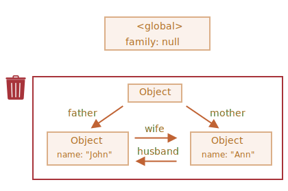

Недостижимый «остров»
Вполне возможна ситуация, при которой целый «остров» взаимосвязанных объектов может стать недостижимым и удалиться из памяти.
Возьмём объект family из примера выше. А затем:
family = null;Структура в памяти теперь станет такой:
Этот пример демонстрирует, насколько важна концепция достижимости.
Объекты John и Ann всё ещё связаны, оба имеют входящие ссылки, но этого недостаточно.
Бывший объект family был отсоединён от корня, на него больше нет ссылки, поэтому весь
«остров» становится недостижимым и будет удалён.